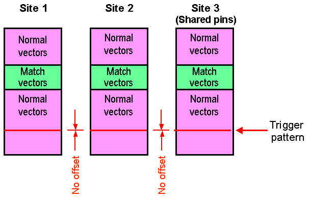

Site Match Disabled with Shared Resources
If you do not enable the site match (match flag OFF), you cannot evaluate the result for each site individually, but exact triggering with shared pins is possible because the match loops are started simultaneously for each site.
The following figure shows this in principle

Functional changes
- Introduced before SmarTest 6.3.2